![]()
library(dplyr)
library(purrr)
library(tibble)
library(ggplot2)This is a post about splines. It’s also a post about “basis splines” and “penalised splines”, a fact that does not endear it to me greatly. Indeed, let’s be brutally honest here, dear reader: I do not care for penalised splines any more than I care for the Box-Cox power exponential distribution that I wittered on about in the last post. I did not care about the BCPE then and I do not care about P-splines now. Unfortunately, in much the same way that I had to learn about the BCPE distribution in order to understand the GAMLSS regression framework that I’m going to talk about in the next post – so much so that my BCPE notes became their own sad and sorry post – I have fallen prey to my vices and again found myself through the looking glass, shaving an unhappy yak, and writing about a topic very different to the one I originally intended to.
Oh well.
Splines
A spline is just a piecewise polynomial, and for the sake of my sanity I’m only going to consider polynomials in a single variable \(x\), and consider a spline function \(f(x)\) defined over the interval \([a, b]\). To build the spline, we partition the interval \([a, b]\) into \(m\) disjoint regions \(r_1, r_2, \ldots, r_m\), whose edges are defined by a vector of knot points \(\mathbf{k} = (k_0, k_1, \ldots, k_m)\).1 If we order the knot points such that \(k_i \leq k_{i+1}\) and set \(k_0 = a\) and \(k_m = b\), then the \(i\)-th region corresponds to the interval \([k_{i-1}, k_i]\) between two successive knots.2 Given this partition we can then define a continuous spline function in terms of \(m\) distinct polynomial functions \(p_1(x), p_2(x), \ldots p_m(x)\), one for each subinterval. Our spline function is just a fancy if-then rule. If the point \(x\) lies within region \(r_i\), use the polynomial \(p_i(x)\):
\[ f(x) = \left\{ \begin{array}{rcl} p_1(x) &\mbox{if}& x \in r_1 \\ p_2(x) &\mbox{if}& x \in r_2 \\ \ldots \\ p_k(x) &\mbox{if}& x \in r_k \\ \end{array} \right. \]
To ensure that the resulting spline function \(f(x)\) is continuous, the polynomials must be constrained so the polynomials on either side of the knot point have the same value at the knot point that connects them.3 To help get a feel for how splines work, I wrote piecewise() function that takes knot vector and a list of functions as inputs, and returns the corresponding piecewise polynomial function f. The source for piecewise() isn’t very interesting but for what it’s worth it’s hidden below the fold here:
Code for piecewise()
piecewise <- function(knots, funs) {
f <- function(x) {
k <- length(funs)
n <- length(x)
y <- rep(NA_real_, n)
r <- rep(NA_integer_, n)
for (i in 1:k) {
ind <- x >= knots[i] & x < knots[i + 1]
r[ind] <- i
y[ind] <- funs[[i]](x[ind])
}
ind <- x == knots[k + 1]
r[ind] <- k
y[ind] <- funs[[k]](x[ind])
attr(y, "region") <- r
y
}
attr(f, "knots") <- knots
attr(f, "funs") <- funs
return(f)
}In my implementation the spline function is undefined outside the interval \([a, b]\) so the values outside the interval are always NA, but I suppose other choices could be made. It’s not important: my piecewise() function isn’t intended for serious use, it’s just something I wrote so that I could play around with simple splines before moving into the world of pain that is B-splines and P-splines. Armed with this entirely uninteresting tool, let’s consider the following example. At the risk of stretching the imagination beyond the limits of human capability, let’s try to pretend that I am deeply interested in the following spline:
\[ f(x) = \left\{ \begin{array}{rcl} 2x^2 - 3x + 2 & \mbox{if} & x \in [0, 1] \\ x & \mbox{if} & x \in [1, 3] \\ -x^3 + 28x - 54 &\mbox{if} & x \in [3, 3.5] \\ \end{array} \right. \]
It is comprised of three polynomials of different degree: there’s a linear function (degree 1), a quadratic function (degree 2), and a cubic function (degree 3). So the degree of our spline is at most 3. For reasons that escape me, if the maximum degree of any of the polynomial pieces is \(d\), we say that the spline is of order \(d+1\). So this is a spline of order 4. Again, thrilling. But let’s suppose I want to implement this spline using my piecewise() function. All I need to do is this:
f <- piecewise(
knots = c(0, 1, 3, 3.5),
funs = list(
\(x) 2*x^2 - 3*x + 2, # left piece is quadratic
\(x) x, # middle piece is linear
\(x) -x^3 + 28*x - 54 # right piece is cubic
)
) Yay. To get a sense of what the function looks like I’ll also define a plot_piecewise() function that plots the spline over the interval \([a, b]\), but it’s really boring so I’m again going to hide the code behind the fold and jump straight to plotting the spline function f:
Code for plot_piecewise()
plot_piecewise <- function(f, n = 5000L) {
lb <- min(attr(f, "knots"))
ub <- max(attr(f, "knots"))
x <- seq(lb, ub, length.out = n)
dat_sp <- tibble(
x = x,
y = f(x),
r = factor(attr(y, "region"))
)
dat_pn <- attr(f, "funs") |>
map(\(p) tibble(x = x, y = p(x))) |>
bind_rows(.id = "r") |>
mutate(r = factor(r))
dat_kn <- tibble(
x = attr(f, "knots"),
y = f(x)
)
plt <- ggplot() +
geom_path(data = dat_sp, aes(x, y, color = r), linewidth = 5, alpha = .25) +
geom_path(data = dat_pn, aes(x, y, color = r)) +
geom_path(data = dat_sp, aes(x, y, group = r), linewidth = 1) +
geom_point(data = dat_kn, mapping = aes(x, y), size = 3) +
labs(x = "x", y = "f(x)", color = "polynomial")
return(plt)
}plot_piecewise(f) + lims(y = c(0, 4))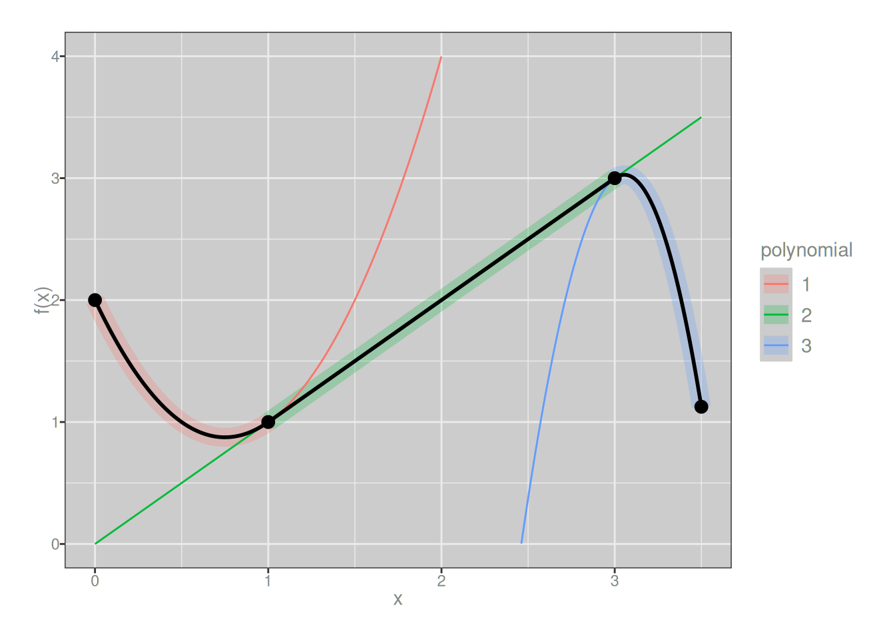
First derivatives are continuous:
f_deriv1 <- piecewise(
knots = c(0, 1, 3, 3.5),
funs = list(
\(x) 4*x - 3, # 1st derivative of left piece
\(x) 1, # 1st derivative of middle piece
\(x) -3 * x^2 + 28 # 1st derivative of right piece
)
)
plot_piecewise(f_deriv1) + lims(y = c(-10, 2))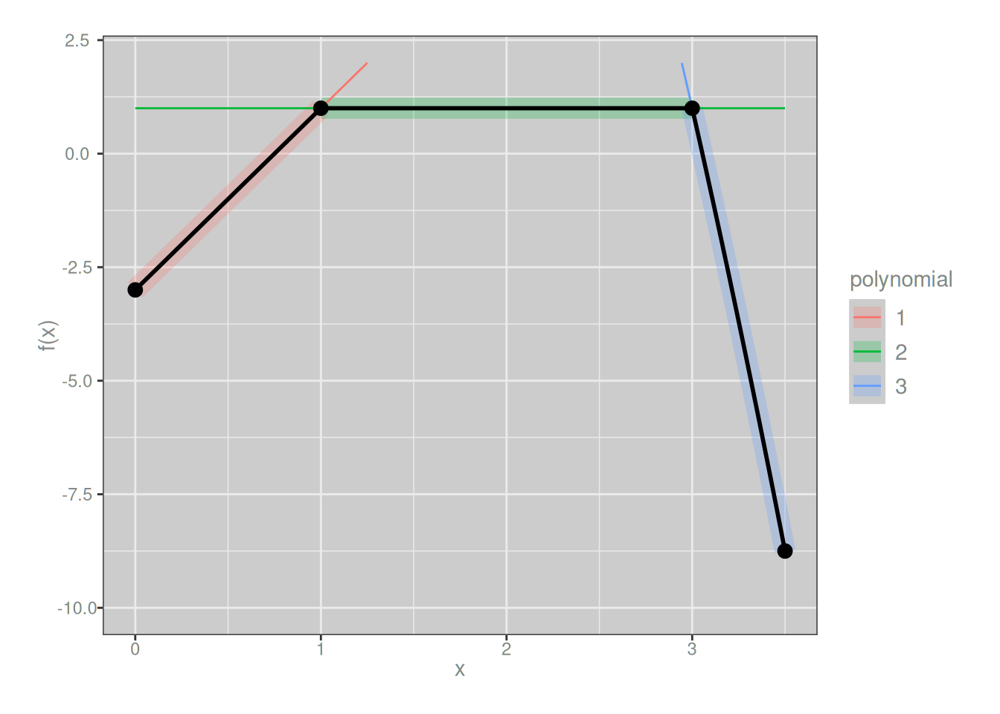
Second derivatives are not:
f_deriv2 <- piecewise(
knots = c(0, 1, 3, 3.5),
funs = list(
\(x) 4, # 2nd derivative of left piece
\(x) 0, # 2nd derivative of middle piece
\(x) -6 * x # 2nd derivative of right piece
)
)
plot_piecewise(f_deriv2)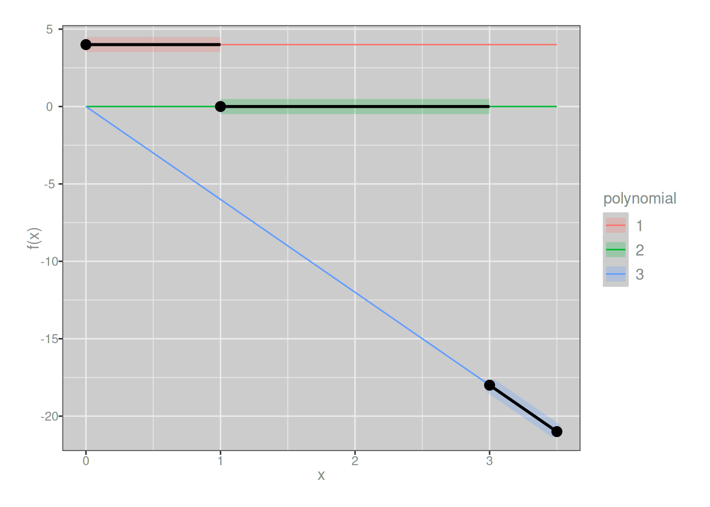
To put it in slightly fancier language, since the 0th derivative (the function) and 1st derivative are continuous everywhere we say that our example spline has smoothness 1 everywhere. However, because the 2nd derivatives are discontinuous at the knot points, the spline does not have smoothness 2 at the knots. More generally, for the spline to have smoothness \(s\) at a knot, the derivatives of orders \(0, 1, \ldots, s\) of adjacent polynomials must all be equal at the knot point.
Yeah, yeah, whatever.
B-splines
Next comes the “basis spline” trick. As it happens, you can rewrite any spline as a weighted sum of so-called B-splines. Let \(f_{m, \mathbf{k}}(x)\) denote a spline function of order \(m\) with knot vector \(\mathbf{k}\). Then
\[ f_{m, \mathbf{k}}(x) = \sum_i \alpha_i \ B_{i,m}(x) \]
where \(B_{i,m}(x)\) is a basis spline (B-spline) function defined with respect to the same knot vector \(\mathbf{k}\), and the coefficient \(\alpha_i\) define the weight assigned to the \(i\)-th basis spline of order \(m\). The basis spline functions are themselves splines, but they are a specific set of spline functions designed to give us the result above.4 From the perspective of a data analyst who wants to fit an arbitrary spline function to a set of points, it can be awfully convenient to work with basis splines because the problem of estimating the unknown spline function \(f(x)\) can be transformed into the problem of estimating the coefficients \(\alpha\).
\[ B_{i,0}(x) = \left\{ \begin{array}{rl} 1 & \mbox{ if } x \in [k_i, k_{i+1}) \\ 0 & \mbox{ otherwise} \end{array} \right. \]
The higher-order basis splines can be conveniently constructed using the Cox-de Boer recursion which expresses a basis spline of order \(m\) as a weighted sum of two basis splines of order \(m-1\):
\[ B_{i,m}(x) \ = \ \frac{x - k_i}{k_{i+m} - k_i} B_{i, m-1}(x) \ + \ \frac{k_{i+m+1} - x}{k_{i+m+1} - k_{i+1}} B_{i+1, m-1}(x) \]
Again, just to provide a sense of what these basis spline functions look like, we’ll use B-splines with evenly spaced knots, and – using a very hacky plot_b_splines() function hidden below the fold – show what B-splines look like when we increase the order of the splines that we wish to represent using them.
Code for b_spline(), even_knots(), plot_b_splines()
even_knots <- function(n_internal, k0 = 0, kn = 1) {
k <- function(i) {
if (i < 0) return(k0)
if (i > (n_internal+1)) return(kn)
return(k0 + (kn - k0) * ceiling(i)/(n_internal+1))
}
knot_vals <- (k0 + (kn - k0) * 0:(n_internal+1))/(n_internal+1)
attr(k, "n_internal") <- n_internal
attr(k, "knots") <- knot_vals
return(k)
}
knots <- even_knots(4)
b_spline <- function(x, i, m, k) {
if(m == 0) {
y <- rep(0, length(x))
y[x >= k(i) & x < k(i+1)] <- 1
return(y)
}
n <- length(x)
if (k(i+m) == k(i)) w1 <- rep(0, n)
if (k(i+m) != k(i)) w1 <- (x - k(i)) / (k(i+m) - k(i))
if (k(i+m+1) == k(i+1)) w2 <- rep(0, n)
if (k(i+m+1) != k(i+1)) w2 <- (k(i+m+1) - x) / (k(i+m+1) - k(i+1))
y1 <- b_spline(x, i, m-1, k)
y2 <- b_spline(x, i+1, m-1, k)
y <- (w1 * y1) + (w2 * y2)
return(y)
}
plot_b_splines <- function(degree, knots = even_knots(degree)) {
k0 <- min(attr(knots, "knots"))
kn <- max(attr(knots, "knots"))
x_val <- seq(k0, kn, length.out = 200L)
n_internal <- attr(knots, "n_internal")
knot_index <- -n_internal:n_internal
dat_fn <- knot_index |>
map_dfr(\(i_val) tibble(
x = x_val,
i = i_val,
y = b_spline(
x = x_val,
i = i_val,
m = degree,
k = knots
)
)) |>
mutate(i = factor(i))
dat_kn <- tibble(
x = map_dbl(knot_index, knots),
y = 0
)
plt <- ggplot() +
geom_path(
data = dat_fn,
mapping = aes(x, y, color = i),
linewidth = 1,
show.legend = FALSE
) +
geom_point(
data = dat_kn,
mapping = aes(x, y),
show.legend = FALSE
) +
facet_wrap(~i) +
labs(x = "x", y = "B(x)")
return(plt)
}Flat “splines”
For the degree 0 basis splines, there’s… really not very much to say. Like, okay, if we call my plotting code it shows us that yup, the basis functions are just step functions:
plot_b_splines(degree = 0, knots)The only interesting thing to note here is that each basis spline covers only a single region, and since the knots carve the interval into 5 regions, there’s only 5 basis splines that are identical apart from being shifted.5 The key thing to notice is that if I define a new spline using these as my B-splines (with the assistance of the b_spline() function that is also hidden behind the fold above), I’ll always end up with step functions (i.e., piecewise flat):
Code for plot_custom_spline()
plot_custom_spline <- function(f) {
dat_f <- tibble(
x = seq(0, .99, by = .01),
y = f(x)
)
dat_k <- tibble(
x = attr(knots, "knots"),
y = f(x)
)
ggplot(mapping = aes(x, y)) +
geom_path(data = dat_f) +
geom_point(data = dat_k)
}my_spline_0 <- function(x) {
0.4 * b_spline(x, i = 0, m = 0, knots) +
2.5 * b_spline(x, i = 1, m = 0, knots) +
3.1 * b_spline(x, i = 2, m = 0, knots) +
1.4 * b_spline(x, i = 3, m = 0, knots) +
1.4 * b_spline(x, i = 4, m = 0, knots)
}
plot_custom_spline(my_spline_0)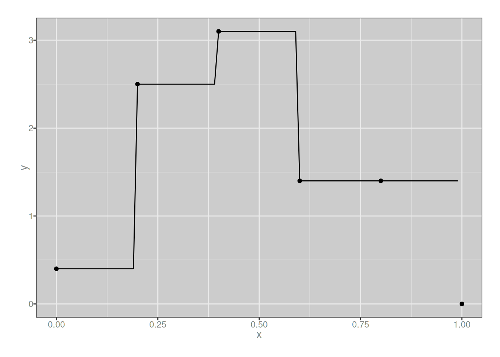
I mean, I guess this isn’t technically a splines at all since it isn’t continuous, but whatever. You get the basic idea: when building a function from a linear combination of 0-degree B-splines defined with respect to a set of knots, you can create an arbitrary step function with breakpoints located at those knots. But you can only create step functions, nothing else.
Linear splines
So that makes sense. Let’s now see what the 1-degree B-splines look like, again using my somewhat-hacky plot_b_splines() function to do the work:
plot_b_splines(degree = 1, knots)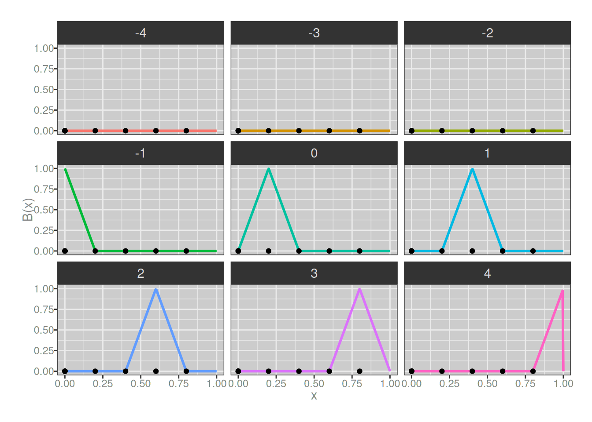
Hm. Okay, so our basis splines here are always triangular in shape. It took me a little bit of thinking to understand the implications of this, but there are three:
- when we add these together we will end up with piecewise-linear functions
- by design they will connect at the knots, so we “gain” one degree of continuity
- all of our B-splines now span two subintervals, so they always have one internal knot, and we’ve gained one extra B-spline
That last point might not be obvious because it kind of looks like some of our 1-degree B-splines don’t have any internal knots, but looks are deceiving: when creating knots for higher degree B-splines, we have to “tie” it with several knots all located at the ends of the interval. So, for instance, the pink asymmetric triangle at the bottom right hand side of the plot above actually does have an internal knot, it just happens to be located at the exact same place as the right-hand knot.6
Aaaaaaannnnnnyway. It’s not like any of this is terribly interesting, but to convince ourselves that that a linear combination of 1-degree B-splines will produce another 1-degree (piecewise linear) spline, let’s make one and plot it:
my_spline_1 <- function(x) {
0.4 * b_spline(x, i = -1, m = 1, knots) +
0.4 * b_spline(x, i = 0, m = 1, knots) +
2.5 * b_spline(x, i = 1, m = 1, knots) +
3.1 * b_spline(x, i = 2, m = 1, knots) +
1.4 * b_spline(x, i = 3, m = 1, knots) +
1.4 * b_spline(x, i = 4, m = 1, knots)
}
plot_custom_spline(my_spline_1)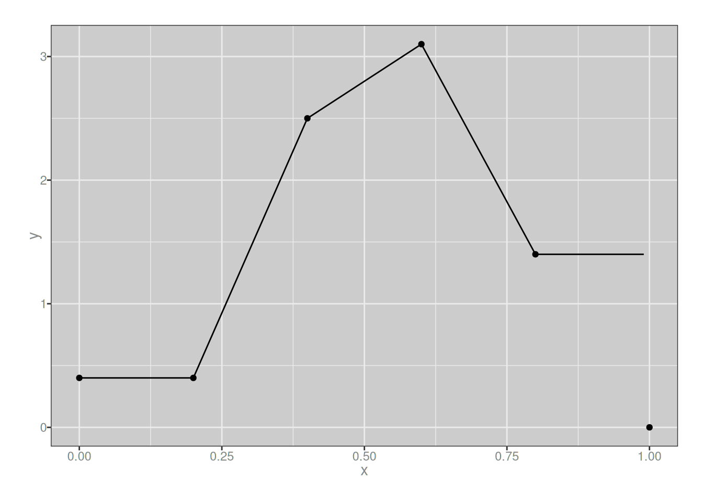
Yup. As expected.
Quadratic splines
Next we turn to quadratic splines. First let’s have a look at our basis splines. Again, because we’ve increased the order of the B-splines we have gained one more spline, and the quadratic splines we create from these will gain an additional degree of continuity (i.e., the first derivatives will be continuous at the knots). Here they are:
plot_b_splines(degree = 2, knots)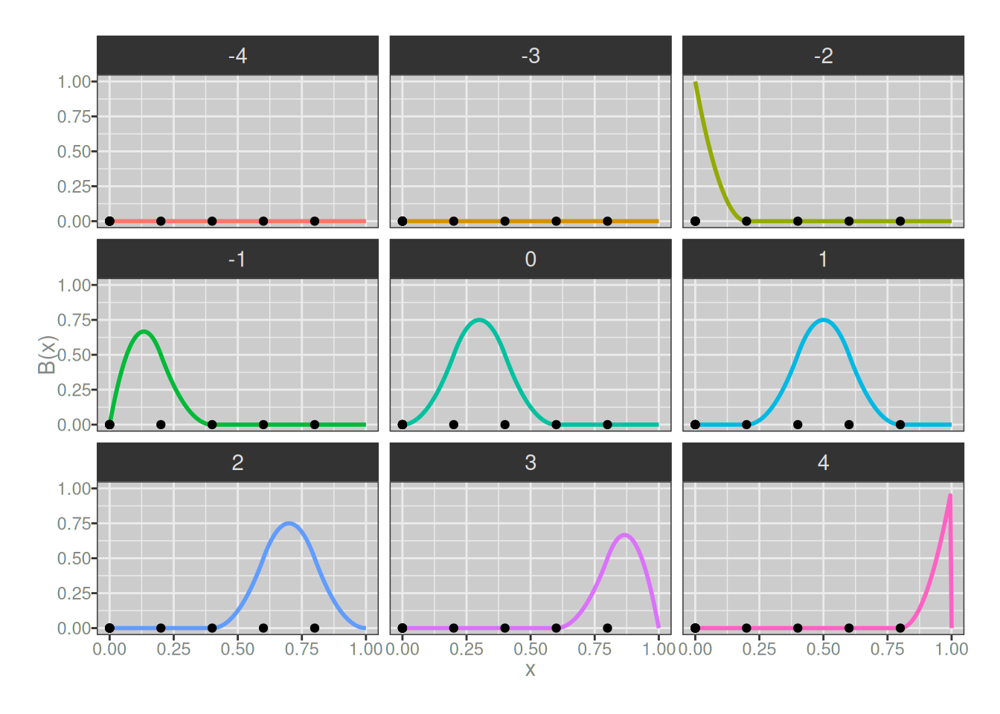
Once again, I’ll create a quadratic spline as a linear combination of the 2-degree B-splines. Notice that I’m not changing the weights assigned to the B-splines when I do so…
my_spline_2 <- function(x) {
0.4 * b_spline(x, i = -2, m = 2, knots) +
0.4 * b_spline(x, i = -1, m = 2, knots) +
0.4 * b_spline(x, i = 0, m = 2, knots) +
2.5 * b_spline(x, i = 1, m = 2, knots) +
3.1 * b_spline(x, i = 2, m = 2, knots) +
1.4 * b_spline(x, i = 3, m = 2, knots) +
1.4 * b_spline(x, i = 4, m = 2, knots)
}
plot_custom_spline(my_spline_2)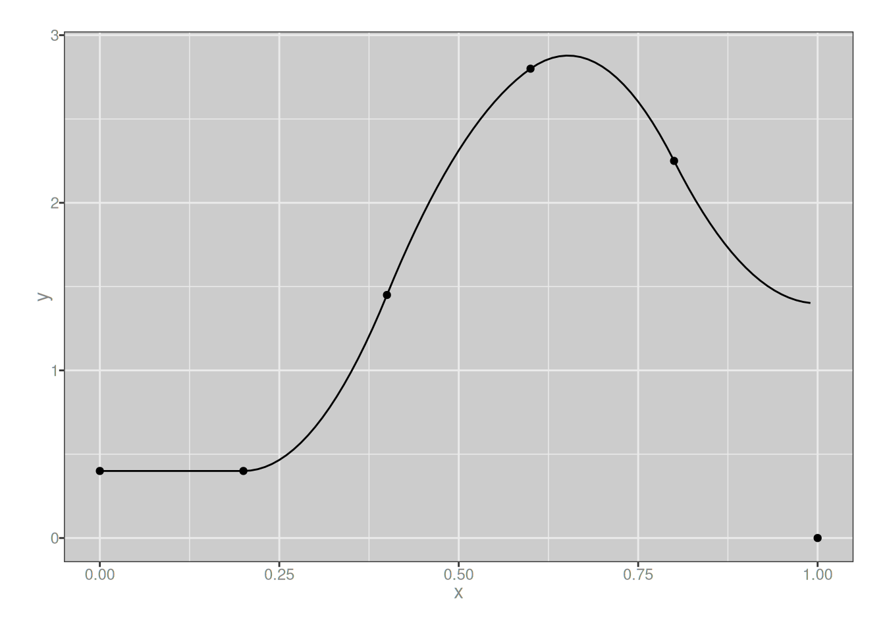
…and the result is a piecewise-quadratic function that looks rather similar to the piecewise-linear function I built in the previous section, just a little smoother.
Cubic splines
At this point it’s probably obvious that I could keep playing this game as long as I wanted to, but I’m getting bored already so let’s do one last round and take a look at 3-degree B-splines. Visually they don’t look much different to the 2-degree ones, but they aren’t quite the same:
plot_b_splines(degree = 3, knots)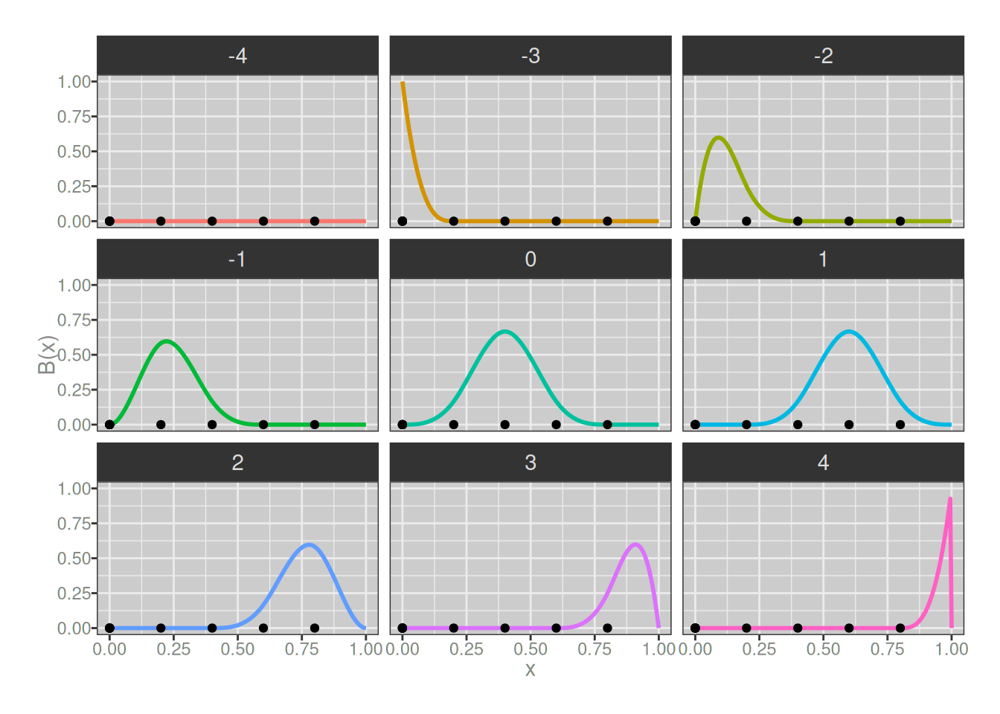
As before, we can create a cubic spline by taking a linear combination of these 3-degree B-splines:
my_spline_3 <- function(x) {
0.4 * b_spline(x, i = -3, m = 3, knots) +
0.4 * b_spline(x, i = -2, m = 3, knots) +
0.4 * b_spline(x, i = -1, m = 3, knots) +
0.4 * b_spline(x, i = 0, m = 3, knots) +
2.5 * b_spline(x, i = 1, m = 3, knots) +
3.1 * b_spline(x, i = 2, m = 3, knots) +
1.4 * b_spline(x, i = 3, m = 3, knots) +
1.4 * b_spline(x, i = 4, m = 3, knots)
}
plot_custom_spline(my_spline_3)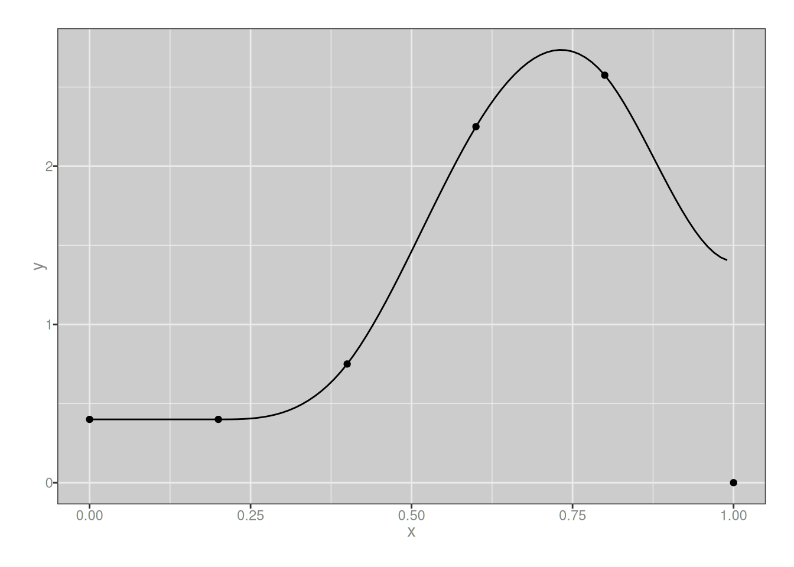
It looks very similar to the quadratic version, but they aren’t quite the same. We could keep going and look at quartic and quintic splines if we wanted to but at this point it’s starting to seem a little silly. Besides, in practice we don’t usually go above cubic splines in real life data analysis, from what I can tell.
Least squares estimation
We are making progress, I think? At this point I’m starting to get a decent intuitive feel for B-splines. That’s good. That being said, I can’t help but notice that it is 11pm on a Sunday night and I am aaaaaaawfully keen to finish this post and the GAMLSS post that I am wrapping up in parallel with this one. So let’s move things along yeah?
Up to this point I’ve built a very simple framework for working with B-splines, and to define arbitrary splines using B-splines. What I don’t have yet is any way to estimate a spline using data. Now, in the real world I don’t actually need to do this myself, because there are many tools in R that already do so, and said tools are implemented soooo much better than any hacky code I could write for myself in a weekend. But that is beside the point. My goal here is to build something that helps me understand how it works, so let’s do something hacky. Here’s the entire “framwork”, in all its horrible, terrible, no good, very bad glory:
# returns a function used to specify knots
even_knots <- function(n_internal, k0 = 0, kn = 1) {
k <- function(i) {
if (i < 0) return(k0)
if (i > (n_internal+1)) return(kn)
return(k0 + (kn - k0) * ceiling(i)/(n_internal+1))
}
knot_vals <- (k0 + (kn - k0) * 0:(n_internal+1))/(n_internal+1)
attr(k, "n_internal") <- n_internal
attr(k, "knots") <- knot_vals
return(k)
}
# function implementing B-splines
b_spline <- function(x, i, m, k) {
if(m == 0) {
y <- rep(0, length(x))
y[x >= k(i) & x < k(i+1)] <- 1
return(y)
}
n <- length(x)
if (k(i+m) == k(i)) w1 <- rep(0, n)
if (k(i+m) != k(i)) w1 <- (x - k(i)) / (k(i+m) - k(i))
if (k(i+m+1) == k(i+1)) w2 <- rep(0, n)
if (k(i+m+1) != k(i+1)) w2 <- (k(i+m+1) - x) / (k(i+m+1) - k(i+1))
y1 <- b_spline(x, i, m-1, k)
y2 <- b_spline(x, i+1, m-1, k)
y <- (w1 * y1) + (w2 * y2)
return(y)
}
# given a set of knots (k) and their weights (a), predict the
# value of corresponding cubic spline at a set of points (x)
cubic_spline <- function(x, a, k) {
n_k <- attr(k, "n_internal")
n_s <- length(a)
if (n_s != 2*n_k) stop("argh...", call. = FALSE)
y <- rep(0, length(x))
for (i in seq_along(a)) {
k_i <- -n_k + i
y <- y + a[i] * b_spline(x, i = k_i, m = 3, k)
}
return(y)
}
# least squares loss function for parameters (a), observed
# predictors (x), outcomes (y), and knots (k)
cs_loss <- function(a, x, y, k) {
y_hat <- cubic_spline(x, a, k)
loss <- sum((y - y_hat)^2)
}
# use the optim() function to estimate the parameters
# using least squares method; it doesn't work terribly
# well in general but it will do for now
cs_pars <- function(x, y, k, ..., loss = cs_loss) {
n <- attr(k, "n_internal")
fit <- optim(
par = rep(mean(y), 2*n),
fn = loss,
x = x,
y = y,
k = k,
...
)
return(fit$par)
}To convince myself that it “works”, at least in the sense that it seems to produce fairly reasonable smoothing in a very simple example, I’ll use the mpg data from the ggplot2 package. In keeping with tradition, I will use displ (engine displacement) as the predictor, and hwy (mileage for highway driving) as the outcome. Here goes…
# the predictor is going to be the displ
# column in mpg, so we'll make sure the
# knots have a wider range thant the data
knots_displ <- even_knots(
n = 10,
k0 = 0, # min(mpg$displ) = 1.6
kn = 10 # max(mpg$displ) = 7
)
# estimate the parameters
pars_mpg <- cs_pars(
x = mpg$displ,
y = mpg$hwy,
k = knots_displ
)
# calculate the estimated spline across the
# full range of the data
pred <- tibble(
displ = seq(
from = min(mpg$displ),
to = max(mpg$displ),
length.out = 100L
),
hwy = cubic_spline(
x = displ,
a = pars_mpg,
k = knots_displ
)
)
# draw a pretty picture
ggplot(mapping = aes(displ, hwy)) +
geom_point(data = mpg) +
geom_path(data = pred, color = "tomato", linewidth = 1)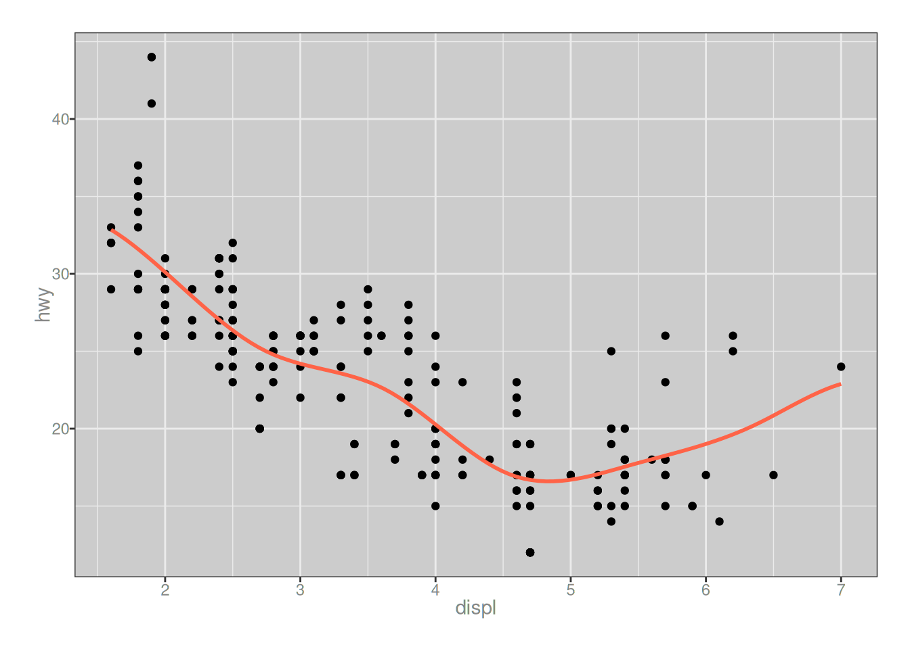
…okay, yeah, good enough. Moving on.
P-splines
At long last I get to P-splines, and thankfully there’s not much I really need to say about them. Originally indroduced by Eilers & Marx, 1996, there’s now a very extensive literature on penalised spline, and I will be brutally honest and admit I’ve read almost none of it. Happily, the overview paper by Eilers, Marx & Durbán 2016 is pretty helpful, and I found it a decent enough place to start. The basic idea is fairly simple: instead of minimising least squares, introduce a penalty function \(P(\mathbf{a})\) on the B-spline weights, to enforce smoothness.
\[ \hat{\mathbf{a}} = \arg \min_{\mathbf{a}} \left(\sum_i (f(x_i, \mathbf{a}) - y_i) \right) + \lambda P(\mathbf{a}) \]
Now, in the real world one should take care in defining a penalty function, and the literature on P-splines quite clearly goes into a lot of detail on this. However, it is now midnight, and I want to go to bed. With that in mind, I’ll do something very simple.
\[ P(\mathbf{a}) = \sum_i (a_i - a_{i+1})^2 \]
Here’s what the implementation of this looks like:
# penalised loss function based on differences between
# the weights assigned to adjacent B-splines
cs_penalised_loss <- function(a, x, y, k, l) {
n <- length(a)
diffs <- a[-1] - a[-n]
y_hat <- cubic_spline(x, a, k)
ols <- sum((y - y_hat)^2)
pen <- sum(diffs^2)
return(ols + l*pen)
}
# estimate parameters for hwy ~ cs(displ)
pars_mpg_p <- cs_pars(
x = mpg$displ,
y = mpg$hwy,
k = knots_displ,
l = 20,
loss = cs_penalised_loss
)
# calculate predictions of the penalised
# spline estimated above
pred_p <- tibble(
displ = seq(
from = min(mpg$displ),
to = max(mpg$displ),
length.out = 100L
),
hwy = cubic_spline(
x = displ,
a = pars_mpg_p,
k = knots_displ
)
)
# draw a pretty picture: tomato red line is the original
# fit; sea green line is the fit with penalty added
ggplot(mapping = aes(displ, hwy)) +
geom_point(data = mpg) +
geom_path(data = pred, color = "tomato", linewidth = 1) +
geom_path(data = pred_p, color = "seagreen", linewidth = 1)Okay, yes that does seem to have smoothed the spline somewhat. The green line is less wiggly than the reddish one, which I suppose was the point of the exercise.
And with that, I am done. This post is haunted and I want nothing more to do with it.
Footnotes
Conventionally, the knot points are denoted \(t\) and the number of knots uses \(k\) as the notation but honestly I think that’s stupid and just makes it harder to understand.↩︎
I suppose if I were being nitpicky enough to define the partition properly I would be a bit more precise and use half-open intervals like \([k_{i-1}, k_i)\) and then make a special case for the final interval by making that one closed, i.e., \([k_{m-1}, k_m]\), but this isn’t the kind of post where I’m going to be that technical, and frankly even if I tried I’d probably just fuck it up.↩︎
To write it slightly more tediously in order to pretend that the author is smart, she notes that the constraint is that \(p_i(k_i) = p_{i+1}(k_i)\) for \(i = 1, 2, \ldots m-1\). This adds precisely nothing of value to the post, of course. However, in deference to her undiagnosed-but-painfully-obvious autism she will dump it in a footnote and move on.↩︎
Something something about B-splines forming a basis for the spline function space or whatever.↩︎
Okay yes, the code also plots several other “basis splines” that are zero everywhere, but we can ignore those: it’s purely because I was lazy in how I wrote the code hidden beneath the fold. Actually there are several respects in which the code is a bit sloppy but I’m not going to let myself be bothered by that in a silly blog post like this↩︎
Well, aaaaactually, there’s an argument to be made that in the statistical context it’s not ideal to clamp the spline down by placing lots of additional knots at the ends. An alternative approach is to simply extend the range: keep all the knots equally spaced, but go far enough outside the range of the data that you don’t need any of the B-splines near the edges. That way, you end up with basis splines that have the same shape. This is discussed by Eilers, Marx and Durbán (2016) in the P-spline context, but it’s waaaaay beyond the scope of what I wanted to accomplish with this post. So let’s move on, shall we?↩︎
Reuse
Citation
BibTeX citation:
@online{navarro2025,
author = {Navarro, Danielle},
title = {Splines, {B-splines,} {P-splines,} and a Disapproving Kitten},
date = {2025-09-06},
url = {https://blog.djnavarro.net/posts/2025-09-06_p-splines/},
langid = {en}
}
For attribution, please cite this work as: